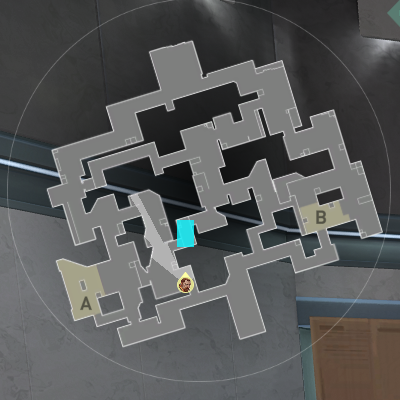
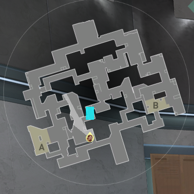
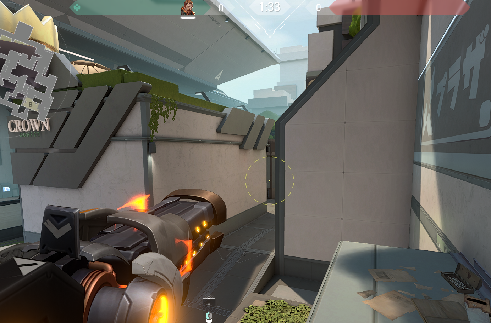

1 Aftershock
Cuando escuches a alguien bajar la cuerda o tirarse a vents, este aftershock te va a regalar una kill o lo va a obligar a volver a subir rapidamente
A continuación vas a ver una recomendación de habilidades que suelo usar y suelen sacar una o más kills (Poné el cursor en un mapa para agrandarlo)
1 Aftershock
Cuando escuches a alguien bajar la cuerda o tirarse a vents, este aftershock te va a regalar una kill o lo va a obligar a volver a subir rapidamente
2 Aftershock
Cuando escuches que la Skye tire perro inicio de ronda, esperá medio segundo y tirale este aftershock, no hay chance de que sobreviva. Después entra a torre para que no te peekeen desde main
3 Flash
Esta flash es muy buena para cuando haya que ganar main antes de pasar al site, o para rushear rampa. La podés acompañar con aftershor o un stunt
4 Stunt
Si ves en el minimapa que están pasando rampa, o si te callean que hay mucho ruido en main, podés tirar este stunt para frenar el push a rampa y aún así stuntear a la gente que todavía está en main. Después de tu stunt deberías callearle a tus compañeros que peekeen main
1 Stunt
Con este stunt podés rushear site con tu jett. Le calleas que tire updraft y dash hacia heaven y vos la acompañás abajo con una flash
2 Flash
Es importante maximizar la cantidad de enemigos flasheados para el entry, y con esta flash vas a cegar a los de backsite a la izquierda y a la derechea, y al de heaven
1 Aftershock
Perfecto para cyphers camperos o para después de flashear a la op, que probablemente se esconda ahí
2 Stunt
Este stunt es muy bueno para caundo los enemigos suelen campear en corta con escopeta. Deberías callearle a tu dueslista el stunt y que el pushee corta
3 Aftershock
Con este aftershock vas a poder matar fácilmente al sova meientras dronea, el birm mientras pone humos, etc, pero además vas a obligar a todos los que estén cerca a exponerse a site